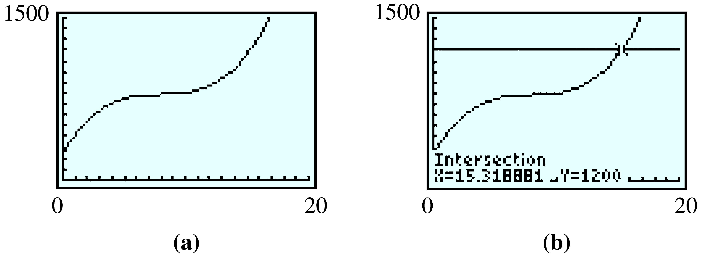
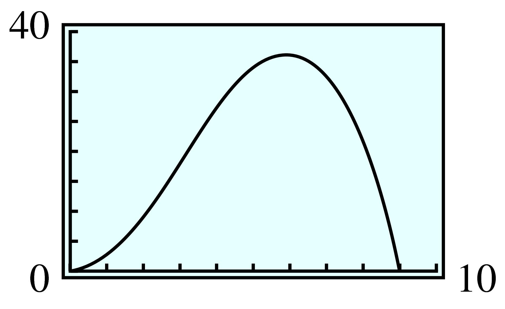
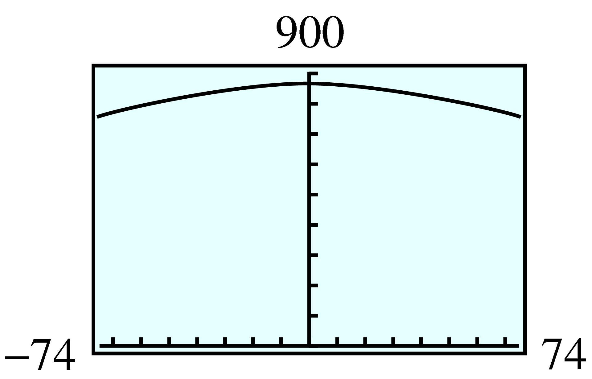

Section 7.1 Polynomial Functions
¶We have already encountered some examples of polynomial functions. Linear functions,
and quadratic functions
are special cases of polynomial functions. In general, we make the following definition.
Polynomial Function.
A polynomial function has the form
where \(a_0\text{,}\) \(a_1\text{,}\) \(a_2\text{,}\) \(\ldots\text{,}\) \(a_n\) are constants and \(a_n \ne 0\text{.}\) The coefficient \(a_n\) of the highest power term is called the lead coefficient.
Some examples of polynomials are
Each of the polynomials above is written in descending powers, which means that the highest-degree term comes first, and the degrees of the terms decrease from largest to smallest. Sometimes it is useful to write a polynomial in ascending powers, so that the degrees of the terms increase. For example, the polynomial \(f(x)\) above would be written as
in ascending powers.
Subsection 7.1.1 Products of Polynomials
When we multiply two or more polynomials together, we get another polynomial of higher degree. (See Algebra Skills Refresher A.7 for the definition of degree.)
Example 7.1.1.
Compute the products.
- \(\displaystyle (x + 2)(5x^3 - 3x^2 + 4)\)
- \(\displaystyle (x - 3)(x + 2)(x - 4)\)

Checkpoint 7.1.2.
Multiply \((y + 2)(y^2 - 2y + 3)\text{.}\)
\(y^3 - y + 6\)
In Example 7.1.1a, we multiplied a polynomial of degree 1 by a polynomial of degree 3, and the product was a polynomial of degree 4. In Example 7.1.1b, the product of three first degree polynomials is a third-degree polynomial.
Degree of a Product.
The degree of a product of nonzero polynomials is the sum of the degrees of the factors. That is,
If \(P(x)\) has degree \(m\) and \(Q(x)\) has degree \(n\text{,}\) then their product \(P(x)Q(x)\) has degree \(n + m\text{.}\)
Example 7.1.3.
Let \(P(x) = 5x^4 - 2x^3 + 6x^2 - x + 2\text{,}\) and \(Q(x) = 3x^3 - 4x^2 + 5x + 3\text{.}\)
What is the degree of their product? What is the coefficient of the lead term?
Find the coefficient of the \(x^3\)-term of the product.
The degree of \(P\) is \(4\text{,}\) and the degree of \(Q\) is \(3\text{,}\) so the degree of their product is \(4 + 3 = 7\text{.}\) The only degree \(7\) term of the product is \((5x^4)(3x^3) = 15x^7\text{,}\) which has coefficient \(15\text{.}\)
-
In the product, each term of \(P(x)\) is multiplied by each term of \(Q(x)\text{.}\) We get degree \(3\) terms by multiplying together terms of degree \(0\) and \(3\text{,}\) or \(1\) and \(2\text{.}\) For these polynomials, the possible combinations are:
\(P(x)\) \(Q(x)\) Product \(2\) \(3x^3\) \(6x^3\) \(-2x^3\) \(3\) \(-6x^3\) \(-x\) \(-4x^2\) \(4x^3\) \(6x^2\) \(5x\) \(30x^3\) The sum of the third-degree terms of the product is \(34x^3\text{,}\) with coefficient \(34\text{.}\)
Checkpoint 7.1.4.
Find the coefficient of the fourth-degree term of the product of \(f(x) = 2x^6 + 2x^4 - x^3 + 5x^2 + 1\) and \(g(x) = x^5 - 3x^4 + 2x^3 + x^2 - 4x - 2\text{.}\)
\(2\)
Subsection 7.1.2 Special Products
In the Algebra Skills Refresher Section A.8, you can review the following special products involving quadratic expressions.
Special Products of Binomials.
There are also special products resulting in cubic polynomials. In the Homework problems, you will be asked to verify the following products.
Cube of a Binomial.
- \(\displaystyle (x + y)^3 = x^3 + 3x^2y + 3xy^2 + y^3\)
- \(\displaystyle (x - y)^3 = x^3 - 3x^2y + 3xy^2 - y^3\)
If you become familiar with these general forms, you can use them as patterns to find specific examples of such products.
Example 7.1.5.
Write \((2w - 3)^3\) as a polynomial.
Use product 2 above, with \(x\) replaced by \(\alert{2w}\) and \(y\) replaced by \(\blert{3}\text{.}\)
Of course, we can also expand the product in Example 7.1.5 simply by polynomial multiplication and arrive at the same answer.
Checkpoint 7.1.6.
Write \(\left(5 + x^2\right)^3\) as a polynomial.
\(125 + 75x^2 + 15x^4 + x^6\)
Subsection 7.1.3 Factoring Cubics
Another pair of products is useful for factoring cubic polynomials. In the Homework problems, you will be asked to verify the following products:
Viewing these products from right to left, we have the following special factorizations for the sum and difference of two cubes.
Factoring the Sum or Difference of Two Cubes.
\(x^3 + y^3 = (x + y)(x^2 - xy + y^2)\)
\(x^3 - y^3 = (x - y)(x^2 + xy + y^2)\)
When we recognize a polynomial as a sum or difference of two perfect cubes, we then identify the two cubed expressions and apply the formula.
Example 7.1.7.
Factor each polynomial.
- \(\displaystyle 8a^3 + b^3\)
- \(\displaystyle 1 - 27h^6\)
-
This polynomial is a sum of two cubes. The cubed expressions are \(2a\text{,}\) because \((2a)^3 = 8a^3\text{,}\) and \(b\text{.}\) Use formula 1 as a pattern, replacing \(x\) with \(\alert{2a}\text{,}\) and \(y\) with \(\blert{b}\text{.}\)
\begin{align*} x^3 + y^3 \amp= (x + y) (x^2 - xy + y^2)\\ (\alert{2a})3 + \blert{b}3 \amp= (\alert{2a} + \blert{b}) ((\alert{2a})^2 - (\alert{2a})\blert{b} + \blert{b}^2) \amp\amp \blert{\text{Simplify.}}\\ \amp= (2a + b) (4a^2 - 2ab + b^2) \end{align*} -
This polynomial is a difference of two cubes. The cubed expressions are \(1\text{,}\) because \(1^3 = 1\text{,}\) and \(3h^2\text{,}\) because \((3h^2)^3 = 27h^6\text{.}\) Use formula 2 above as a pattern, replacing \(x\) by \(\alert{1}\text{,}\) and \(y\) by \(\blert{3h^2}\text{:}\)
\begin{align*} x^3 - y^3 \amp= (x - y) (x^2 + xy + y^2)\\ \alert{1}^3 - (\blert{3h^2})^3 \amp= (\alert{1} - \blert{3h^2})(\alert{1}^2 + \alert{1}(\blert{3h^2}) + (\blert{3h^2})^2)\amp\amp \blert{\text{Simplify.}}\\ \amp= (1 - 3h^2)(1 + 3h^2 + 9 h^4) \end{align*}
Checkpoint 7.1.8.
Factor \(125n^3 - p^3\)
\((5n - p)(25n^2 + 5np + p^2)\)
Subsection 7.1.4 Modeling with Polynomials
Polynomials model many variable relationships, including volume and surface area.
Example 7.1.9.
A closed box has a square base of length and width \(x\) inches and a height of \(8\) inches, as shown at right.

Write a polynomial function \(S(x)\) that gives the surface area of the box in terms of the dimensions of the base.
What is the surface area of a box of length and width \(18\) inches?
-
The surface area of a box is the sum of the areas of its six faces,
\begin{equation*} S = 2lh + 2wh + 2lw \end{equation*}Substituting \(x\) for \(l\) and \(w\text{,}\) and \(8\) for \(h\) gives us
\begin{equation*} S(x) = 2(8)x + 2(8)x + 2x^2 = 2x^2 + 32x \end{equation*} -
We evaluate the polynomial for \(x = 18\) to find
\begin{equation*} S(18) = 2(18)^2 + 32(18) = 1224 \text{ square inches} \end{equation*}
Checkpoint 7.1.10.
An empty reflecting pool is \(3\) feet deep. It is \(8\) feet longer than it is wide, as illustrated below.
Write a polynomial function \(S(x)\) that gives the surface area of the empty pool.
Write a polynomial function \(V(x)\) for the volume of the pool.
\(S(x) = x^2 + 20x + 48\)
\(V(x) = 3x^2 + 24x\)
Cubic polynomials are often used in economics to model cost functions. The cost of producing \(x\) items is an increasing function of \(x\text{,}\) but its rate of increase is usually not constant.
Example 7.1.11.
Pegasus Printing, Ltd. is launching a new magazine. The cost of printing \(x\) thousand copies is given by
What are the fixed costs, that is, the costs incurred before any copies are printed?
-
Graph the cost function in the window below and describe the graph.
\begin{align*} \text{Xmin} \amp = 0 \amp\amp \text{Xmax} = 20\\ \text{Ymin} \amp = 0 \amp\amp \text{Ymax} = 1500 \end{align*} How many copies can be printed for $1200?
What does the concavity of the graph tell you about the cost function?
Fixed costs are given by \(C(0) = 250\text{,}\) or $\(250\text{.}\) The fixed costs include expenses like utility bills that must be paid even if no magazines are produced.
-
The graph is shown in figure (a). It is increasing from a vertical intercept of \(250\text{.}\) The graph is concave down for \(x \lt 8\) approximately, and concave up for \(x\gt 8\text{.}\)
 -
We must solve the equation
\begin{equation*} x^3 - 24x^2 + 195x + 250 = 1200 \end{equation*}We will solve the equation graphically, as shown in figure (b). Graph \(y = 1200\) along with the cost function, and use the intersect command to find the intersection point of the graphs, \((15.319, 1200)\text{.}\) \(C(x) = 1200\) when \(x\) is about \(15.319\text{,}\) so \(15,319\) copies can be printed for $\(1200\text{.}\)
Although the cost is always increasing, it increases very slowly from about \(x = 5\) to about \(x = 11\text{.}\) The flattening of the graph in this interval is a result of economy of scale: By buying supplies in bulk and using time efficiently, the cost per magazine can be minimized. However, if the production level is too large, costs begin to rise rapidly again.
In Example 7.1.11c, we solved a cubic equation graphically. There is a cubic formula, analogous to the quadratic formula, that allows us to solve cubic equations algebraically, but it is complicated and not often used. See the Projects for Chapter 7 if you would like to know more about the cubic formula.
Cubic polynomials are also used to model smooth curves connecting given points. Such a curve is called a cubic spline.
Checkpoint 7.1.12.
Leon is flying his plane to Au Gres, Michigan. He maintains a constant altitude until he passes over a marker just outside the neighboring town of Omer, when he begins his descent for landing. During the descent, his altitude, in feet, is given by
where \(x\) is the number of miles Leon has traveled since passing over the marker in Omer.
What is Leon’s altitude when he begins his descent?
-
Graph \(A(x)\) in the window
\begin{equation*} \begin{aligned}[t] \text{Xmin} \amp = 0 \amp\amp \text{Xmax} = 5\\ \text{Ymin} \amp = 0 \amp\amp \text{Ymax} = 8000 \end{aligned} \end{equation*} Use the Trace feature to discover how far from Omer Leon will travel before landing. (In other words, how far is Au Gres from Omer?)
Verify your answer to part (c) algebraically.
\(8000\) ft

\(5\) mi
\(A(5) = 0\)
Subsection 7.1.5 Section Summary
¶Subsubsection 7.1.5.1 Vocabulary
Look up the definitions of new terms in the Glossary.
Polynomial function
Degree
Ascending powers
Lead coefficient
Descending powers
Subsubsection 7.1.5.2 CONCEPTS
The degree of a product of nonzero polynomials is the sum of the degrees of the factors.
Cube of a Binomial.
- \(\displaystyle (x + y)^3 = x^3 + 3x^2y + 3xy^2 + y^3\)
- \(\displaystyle (x - y)^3 = x^3 - 3x^2y + 3xy^2 - y^3\)
If we know the vertex of a parabola, we need only one other point to find its equation.
Factoring the Sum or Difference of Two Cubes.
\(x^3 + y^3 = (x + y)(x^2 - xy + y^2)\)
\(x^3 - y^3 = (x - y)(x^2 + xy + y^2)\)
Subsubsection 7.1.5.3 STUDY QUESTIONS
If you add two polynomials of degree \(3\text{,}\) what can you say about the degree of the sum?
If you multiply a polynomial of degree \(3\) and a polynomial of degree \(4\text{,}\) what can you say about the degree of the product?
-
If you multiply together
\begin{equation*} (2x - 1)(2x - 2)(2x - 3) \cdots (2x - 8) \end{equation*}what will be the degree of the product? What will be the lead coefficient?
What are the two middle terms in the expansion of \((x + y)^3\text{?}\)
Is it possible to factor the sum of two cubes? What about the sum of two squares?
Subsubsection 7.1.5.4 SKILLS
Practice each skill in the Homework 7.1.6 problems listed.
Multiply polynomials: #1–8
Find specific terms of polynomial products: #9–22
Use the formula for the cube of a binomial: #23–34
Factor the sum or difference of two cubes: #35–46
Write and analyze polynomial models: #47–64
Exercises 7.1.6 Homework 7.1
¶For Problems 1-8, multiply.
1.
\((3x - 2)(4x^2 + x - 2)\)
\(12x^3 - 5x^2 - 8x + 4\)
2.
\((2x + 3)(3x^2 - 4x + 2)\)
3.
\((x - 2)(x - 1)(x - 3)\)
\(x^3 - 6x^2 + 11x - 6\)
4.
\((z - 5)(z + 6)(z - 1)\)
5.
\((2a^2 - 3a + 1)(3a^2 + 2a - 1)\)
\(6a^4 - 5a^3 - 5a^2 + 5a - 1\)
6.
\((b^2 - 3b + 5)(2b^2 - b + 1)\)
7.
\((y - 2)(y + 2)(y + 4)(y + 1)\)
\(y^4 + 5y^3 - 20y - 16\)
8.
\((z + 3)(z + 2)(z - 1)(z + 1)\)
For Problems 9-12, find the first three terms of the product in ascending powers. (Do not compute the entire product!)
For Problems 13-16, find the indicated term in each product. (Do not compute the entire product!)
For Problems 17-18, without performing the multiplication, give the degree of each product and the leading coefficient.
17.
\((x^2 - 4) (3x^2 - 6x + 2)\)
\((x - 3) (2x - 5) (x^3 - x + 2)\)
\((3x^2 + 2x) (x^3 + 1) (-2x^2 + 8)\)
\(4\)
\(5\)
\(7\)
18.
\((6x^2 - 1) (4x^2 - 9)\)
\((3x + 4) (3x + 1) (2x^3 + x^2 - 7)\)
\((x^2 - 3) (2x^3 - 5x^2 + 2) (-x^3 - 5x)\)
For Problems 19-22, verify the following products discussed in the text.
19.
\((x + y)^3 = x^3 + 3x^2 y + 3xy^2 + y^3\)
\(\begin{aligned}[t] (x + y)^3 \amp = (x + y)(x + y)^2\\ \amp = (x + y)(x^2 + 2xy + y^2) \\ \amp = x^3 + 2x^2 y + xy^2 + x^2 y + 2xy^2 + y^3\\ \amp = x^3 + 3x^2 y + 3xy^2 + y^3 \end{aligned}\)
20.
\((x - y)^3 = x^3 - 3x^2 y + 3xy^2 - y^3\)
21.
\((x + y)(x^2 - xy + y^2) = x^3 + y^3\)
\(\begin{aligned}[t] (x + y)(x^2 - xy + y^2) \amp = x^3 -x^2 y + xy^2 + x^2 y -xy^2 + y^3\\ \amp = x^3 + y^3 \end{aligned}\)
22.
\((x - y)(x^2 + xy + y^2) = x^3 - y^3\)
23.
As if you were addressing a classmate, explain how to remember the formula for expanding \((x + y)^3\text{.}\) In particular, mention the exponents on each term and the numerical coefficients.
Explain how to remember the formula for expanding \((x - y)^3\text{,}\) assuming your listener already knows the formula for \((x + y)^3\text{.}\)
The formula begins with \(x^3\) and ends with \(y^3\text{.}\) As you proceed from term to term, the exponents on \(x\) decrease while the exponents on \(y\) increase, and on each term the sum of the exponents is \(3\text{.}\) The coefficients of the two middle terms are both \(3\text{.}\)
The formula is the same as for \((x - y)^3\text{,}\) except that the terms alternate in sign.
24.
As if you were addressing a classmate, explain how to remember the formula for factoring a sum of two cubes. Pay particular attention to the placement of the variables and the signs of the terms.
Explain how to remember the formula for factoring a difference of two cubes, assuming your listener already knows how to factor a sum of two cubes.
For Problems 25-28, use the formulas for the cube of a binomial to expand the products.
For Problems 29-34, write each product as a polynomial and simplify.
For Problems 35-46, factor completely.
35.
\(x^3 + 27\)
\((x+3)(x^2-3x+9) \)
36.
\(y^3 -1\)
37.
\(a^3 -8 b^3\)
\((a-2b)(a^2+2ab+4b^2) \)
38.
\(27a^3 +b^3\)
39.
\(x^3y^6 -1\)
\((xy^2-1)(x^2y^4+xy^2+1) \)
40.
\(8 + x^{12}y^3\)
41.
\(27a^3 + 64b^3\)
\((3a+4b)(9a^2 -12ab+16b^2) \)
42.
\(8a^3 - 125b^3\)
43.
\(125a^3b^3 - 1\)
\((5ab-1)(25a^2b^2+5ab+1) \)
44.
\(64a^3b^3 + 1\)
45.
\(64t^9 + w^6\)
\((4t^3+w^2)(16t^6 -4t^3w^2+w^4) \)
46.
\(w^{15} - 125t^9\)
47.
Write a polynomial function, \(A(x)\text{,}\) that gives the area of the front face of the speaker frame (the region in color) in the figure.
If \(x=8\) inches, find the area of the front face of the frame.

\(\left(6-\dfrac{5}{4}\pi \right)x^2 \)
\(\approx 132.67\) square inches
48.
A Norman window is shaped like a rectangle whose length is twice its width, with a semicircle at the top (see the figure). Write a polynomial, \(A(x)\text{,}\) that gives its area.
If \(x=3\) feet, find the area of the front face of the frame.

49.
A grain silo is built in the shape of a cylinder with a hemisphere on top (see the figure). Write an expression for the volume of the silo in terms of the radius and height of the cylindrical portion of the silo.
If the total height of the silo is five times its radius, write a polynomial function \(V(r )\) in one variable for its volume.

\(\dfrac{2}{3}\pi r^3+\pi r^2h \)
\(V(r)=\dfrac{14}{3}\pi r^3 \)
50.
A cold medication capsule is shaped like a cylinder with a hemispherical cap on each end (see the figure). Write an expression for the volume of the capsule in terms of the radius and length of the cylindrical portion.

If the radius of the capsule is one-fourth of its overall length, write a polynomial function \(V(r )\) in one variable for its volume.
51.
Jack invests $\(500\) in an account bearing interest rate \(r\text{,}\) compounded annually. This means that each year his account balance is increased by a factor of \(1 + r\text{.}\)
Write expressions for the amount of money in Jack's account after \(2\) years, after \(3\) years, and after \(4\) years.
- Expand as polynomials the expressions you found in part (a).
How much money will be in Jack's account at the end of \(2\) years, \(3\) years, and \(4\) years if the interest rate is \(8\%\text{?}\)
\(500(1 + r )^2\text{;}\) \(500(1 + r )^3\text{;}\) \(500(1 + r )^4 \)
\(500r^2 + 1000r + 500\text{;}\) \(500r^3 + 1500r^2 + 1500r + 500\text{;}\) \(500r^4 + 2000r^3 + 3000r^2 + 2000r + 500 \)
- $583.20, $629.86, $680.24
52.
A small company borrows $800 for start-up costs and agrees to repay the loan at interest rate \(r\text{,}\) compounded annually. This means that each year the debt is increased by a factor of \(1 + r\text{.}\)
Write expressions for the amount of money the company will owe if it repays the loan after \(2\) years, after \(3\) years, or after \(4\) years.
Expand as polynomials the expressions you found in part (a).
How much money will the company owe after \(2\) years, after \(3\) years, or after \(4\) years at an interest rate of \(12\%\text{?}\)
53.
A paper company plans to make boxes without tops from sheets of cardboard \(12\) inches wide and \(16\) inches long. The company will cut out four squares of side \(x\) inches from the corners of the sheet and fold up the edges as shown in the figure.

Write expressions in terms of \(x\) for the length, width, and height of the resulting box.
Write a formula for the volume, \(V\text{,}\) of the box as a function of \(x\text{.}\)
What is the domain of the function \(V\text{?}\) (What are the largest and smallest reasonable values for \(x\text{?}\))
Make a table of values for \(V(x) \) on its domain.
Graph your function \(V\) in a suitable window.
Use your graph to find the value of \(x\) that will yield a box with maximum possible volume. What is the maximum possible volume?
Length: \(16 - 2x\text{;}\) Width: \(12 - 2x\text{;}\) Height: \(x\)
\(V = x(16 - 2x)(12 - 2x)\)
Real numbers between \(0\) and \(6\)
\(x\) \(1\) \(2\) \(3\) \(4\) \(5\) \(V\) \(140\) \(192\) \(180\) \(128\) \(60\) - 
\(2.26\) in, \(194.07\) cu in
54.
The paper company also plans to make boxes with tops from \(12\)-inch by \(16\)-inch sheets of cardboard by cutting out the shaded areas shown in the figure and folding along the dotted lines.

Write expressions in terms of \(x\) for the length, width, and height of the resulting box.
Write a formula for the volume, \(V\text{,}\) of the box as a function of \(x\text{.}\)
What is the domain of the function \(V\text{?}\) (What are the largest and smallest reasonable values for \(x\text{?}\))
Make a table of values for \(V(x) \) on its domain.
Graph your function \(V\) in a suitable window.
Use your graph to find the value of \(x\) that will yield a box with maximum possible volume. What is the maximum possible volume?
Use your graphing calculator to help you answer the questions in Problems 55–62. Then verify your answers algebraically.
55.
A doctor who is treating a heart patient wants to prescribe medication to lower the patient's blood pressure. The body's reaction to this medication is a function of the dose administered. If the patient takes \(x\) milliliters of the medication, his blood pressure should decrease by \(R = f (x)\) points, where
For what values of \(x\) is \(R = 0\text{?}\)
Find a suitable domain for the function and explain why you chose this domain.
Graph the function \(f\) on its domain.
How much should the patient's blood pressure drop if he takes \(2\) milliliters of medication?
What is the maximum drop in blood pressure that can be achieved with this medication?
There may be risks associated with a large change in blood pressure. How many milliliters of the medication should be administered to produce half the maximum possible drop in blood pressure?
\(0, 9\)
\(0\le x \le 9\text{;}\) \(R\ge 0\) for these values

\(\dfrac{28}{3} \) points
\(36\) points
\(3\) ml or \(8.2\) ml
56.
A soup bowl has the shape of a hemisphere of radius \(6\) centimeters. The volume of the soup in the bowl, \(V = f (x)\text{,}\) is a function of the depth, \(x\text{,}\) of the soup.
What is the domain of \(f\text{?}\) Why?
-
The function \(f\) is given by
\begin{equation*} f (x) = 6 \pi x^2 -\frac{\pi}{3}x^3 \end{equation*}Graph the function on its domain.
What is the volume of the soup if it is \(3\) centimeters deep?
What is the maximum volume of soup that the bowl can hold?
Find the depth of the soup (to within \(2\) decimal places of accuracy) when the bowl is filled to half its capacity.
57.
The population, \(P(t) \text{,}\) of Cyberville has been growing according to the formula
where \(t\) is the number of years since 1970.
-
Graph \(P(t)\) in the window
\begin{align*} {\text{Xmin}} \amp = 0 \amp\amp {\text{Xmax}} = 47\\ {\text{Ymin}} \amp = 0 \amp\amp {\text{Ymax}} = 20,000 \end{align*} What was the population in 1970? In 1985? In 2004?
By how much did the population grow from 1970 to 1971? From 1985 to 1986? From 2004 to 2005?
Approximately when was the population growing at the slowest rate, that is, when is the graph the least steep?

\(900\text{;}\) \(11,145\text{;}\) \(15,078\)
\(1341\text{;}\) \(171\text{;}\) \(627\)
Between 1990 and 1991
58.
The annual profit, \(P(t)\text{,}\) of the Enviro Company, in thousands of dollars, is given by
where \(t\) is the number of years since 1960, the first year that the company showed a profit.
-
Graph \(P(t)\) in the window
\begin{align*} {\text{Xmin}} \amp = 0 \amp\amp {\text{Xmax}} = 94\\ {\text{Ymin}} \amp = 0 \amp\amp {\text{Ymax}} = 50,000 \end{align*} What was the profit in 1960? In 1980? In 2000?
How did the profit change from 1960 to 1961? From 1980 to 1981? From 2000 to 2001?
During which years did the profit decrease from one year to the next?
59.
The total annual cost of educating postgraduate research students at an Australian university, in thousands of dollars, is given by the function
where \(x\) is the number of students, in hundreds. (Source: Creedy, Johnson, and Valenzuela, 2002)
Graph the function in a suitable window for up to \(3500\) students.
Describe the concavity of the graph. For what value of \(x\) is the cost growing at the slowest rate?
Approximately how many students can be educated for $\(350,000\text{?}\)

The graph is concave down until about \(x = 12.5\) and is concave up afterwards. The cost is growing at the slowest rate at the inflection point at about \(x = 12.5\text{,}\) or \(1250\) students.
About \(2890\)
60.
It has been proposed that certain cubic functions model the response of wheat and barley to nitrogen fertilizer. These functions exhibit a "plateau" that fits observations better than the standard quadratic model. (See Problem 8.2.5.36 of Section 8.2.) In trials in Denmark, the yield per acre was a function of the amount of nitrogen applied. A typical response function is
where \(x\) is the amount of fertilizer, in kilograms per acre.(Source: Beattie, Mortensen, and Knudsen, 2005)
Graph the function on the domain \([0, 400]\text{.}\)
Describe the concavity of the graph. In reality, the yield does not increase after reaching its plateau. Give a suitable domain for the model in this application.
Estimate the maximum yield attainable and the optimum application of fertilizer.
61.
During an earthquake, Nordhoff Street split in two, and one section shifted up several centimeters. Engineers created a ramp from the lower section to the upper section. In the coordinate system shown in the figure below, the ramp is part of the graph of

By how much did the upper section of the street shift during the earthquake?
What is the horizontal distance from the bottom of the ramp to the raised part of the street?
\(20\) cm
\(100\) cm
62.
The off-ramp from a highway connects to a parallel one-way road. The accompanying figure shows the highway, the off-ramp, and the road. The road lies on the \(x\)-axis, and the off-ramp begins at a point on the \(y\)-axis. The offramp is part of the graph of the polynomial

How far east of the exit does the off-ramp meet the one-way road?
How far apart are the highway and the road?
63.
The number of minutes of daylight per day in Chicago is approximated by the polynomial
where \(t\) is the number of days since the summer solstice. The approximation is valid for \(-74 \lt t \lt 74\text{.}\) (A negative value of \(t\) corresponds to a number of days before the summer solstice.)
Use a table of values with increments of \(10\) days to estimate the range of the function on its domain.
Graph the polynomial on its domain.
How many minutes of daylight are there on the summer solstice?
How much daylight is there two weeks before the solstice?
When are the days more than \(14\) hours long?
When are the days less than \(13\) hours long?
\(763.10 \lt H(t) \lt 864\)
- 
\(864\) min
\(859.8\) min
Within \(34\) days of the summer solstice
More than \(66\) days from the summer solstice
64.
The water level (in feet) at a harbor is approximated by the polynomial
where \(t\) is the number of hours since the high tide. The approximation is valid for \(-4 \le t \le 4\text{.}\) (A negative value of \(t\) corresponds to a number of hours before the high tide.)
Use a table of values to estimate the range of the function on its domain.
Graph the polynomial on its domain.
What is the water level at high tide?
What is the water level \(3\) hours before high tide?
When is the water level below \(8\) feet?
When is the water level above \(7\) feet?